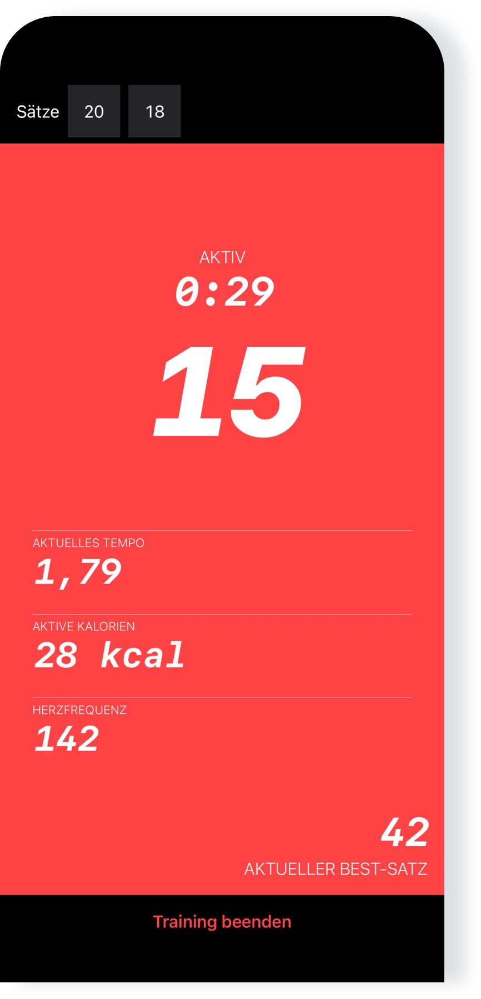
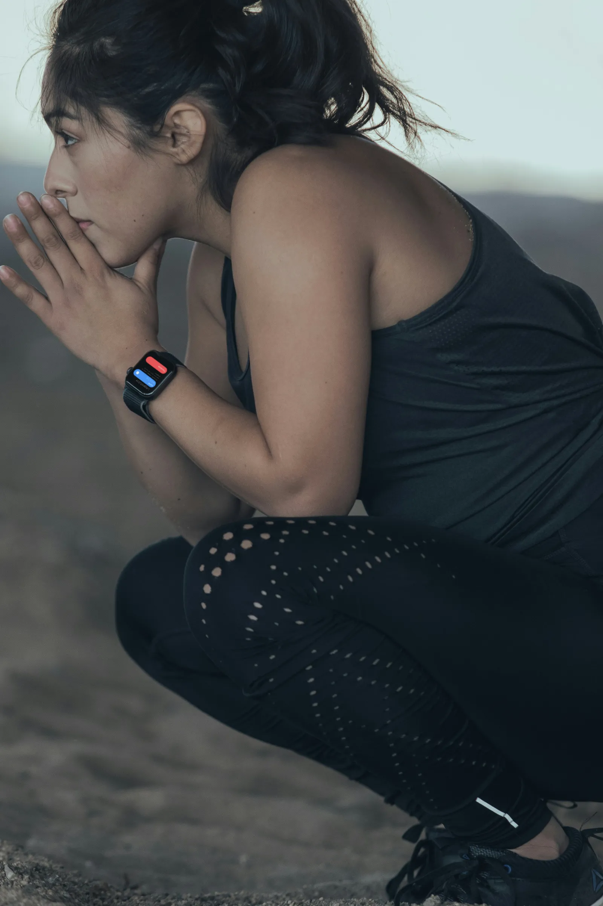

Tolle App
“Ich mag diese App wirklich. Gerade die Einfachheit macht sie so gut!”
Liegestütz-Training für iPhone, iPad und Apple Watch
Folge dem Programm oder trainiere frei. Pushanova zählt deine Liegestütze auf iPhone, iPad und Apple Watch.

Kostenlos starten. Kein Konto. Keine Werbung.

Das Programm hat 50 Level. Starte auf einem beliebigen Level, oder trainiere frei und wähle deine Sätze. Du kannst auch Liegestütz-Sätze während Cardio oder Krafttraining aufzeichnen.
Pushanova verlangt keinen Tages- oder Wochenplan. Du kannst ein Level wiederholen und Ruhetage nehmen, ohne Nachteil für eine Pause.

Lege dein iPhone oder iPad auf den Boden, oder starte auf der Apple Watch. Ein kurzer Countdown gibt dir Zeit, in Position zu gehen.
Pushanova zählt deine Liegestütze automatisch und speichert Sätze, Tempo, Zeit und Kalorien. Du entscheidest, wie lange du pausierst: früher weitermachen oder länger ruhen.
Starte und beende ein Training auf der Apple Watch, auch ohne iPhone in der Nähe. Zusammen zählt die Apple Watch, während das iPhone dasselbe Training zeigt.
Pushanova speichert jedes abgeschlossene Training. Der Verlauf zeigt, wie sich dein Training verändert.

“Ich mag diese App wirklich. Gerade die Einfachheit macht sie so gut!”
“Sie ist großartig. Sie hilft mir, mehr Liegestütze zu schaffen, und motiviert mich, besser zu werden.”
“Ich schaffe jetzt so viele Liegestütze! Geschrieben von unserem 13-jährigen Sohn, den diese App sehr motiviert hat.”
“Ich liebe diese App. Ich wollte kürzlich sehen, wie schnell ich 100 Liegestütze schaffe. Ich habe keine App gefunden, die das so einfach und zu einem fairen Preis macht, bis ich diese gefunden habe. Ich mag, wie klar die App ist. Der Entwickler reagiert auch schnell auf Feedback.”
App-Store-Bewertungen wurden für Länge und Klarheit leicht bearbeitet.
Die Liegestütz-Erkennung auf iPhone und iPad macht keine Fotos und nimmt kein Video auf, speichert keines und lädt keines hoch. Pushanova nutzt die Kamera nicht, um dich zu erkennen.
Pushanova braucht kein Konto, verkauft deine Daten nicht und enthält keine Werbung. Trainingsdaten bleiben auf deinen Geräten und in deinem persönlichen iCloud-Account, wenn die Synchronisierung an ist. Mit deiner Erlaubnis können abgeschlossene Trainings in Apple Health gespeichert werden.
Ein laufendes Training kann wiederhergestellt werden, wenn Pushanova geschlossen oder unterbrochen wird.
Nein. Pushanova kann Liegestütze mit einem iPhone oder iPad erfassen. Die Apple Watch ergänzt die Erkennung am Handgelenk und unterstützt erhöhte Liegestütze auf einer Bank und an einer Stange.
Ja. Du kannst ein Training auf der Apple Watch starten und abschließen, während dein iPhone nicht in der Nähe ist. Die Watch-App konzentriert sich auf das Training. Verlauf und Auswertungen gibt es auf iPhone und iPad.
Wenn du Apple Watch und iPhone zusammen nutzt, kann die Apple Watch deine Liegestütze zählen, während das iPhone das synchronisierte Training anzeigt.
Auf iPhone und iPad misst die Frontkamera, wie sich der Abstand zwischen deinem Gesicht und dem Gerät verändert. Auf der Apple Watch wertet Pushanova die Bewegung deines Handgelenks aus. Du kannst auch eine Einstellung aktivieren, die bei jedem Tippen auf den Bildschirm einen Liegestütz zählt.
Ja. Auf dem iPhone kann Pushanova einen anderen Sensor im Gerät nutzen, wenn kein Kamerazugriff verfügbar ist. Auf iPhone und iPad kannst du das Zählen durch Tippen auf den Bildschirm einschalten. Die Apple Watch nutzt keine Kamera.
Nein. Das automatische Zählen macht keine Fotos und nimmt kein Video auf, speichert keines und lädt keines hoch. Die Kamera misst nur den Abstand, und Pushanova nutzt sie nicht, um dich zu erkennen.
iPhone und iPad unterstützen normale Liegestütze auf dem Boden und Liegestütze auf den Knien. Die Apple Watch unterstützt auch erhöhte Liegestütze auf einer Bank oder an einer Stange.
Liegestütze an parallelen Griffen, mit den Handflächen zueinander, werden nicht unterstützt. Liegestütze auf den Fingerknöcheln können funktionieren, das Zählen kann aber ungenauer sein.
Keine automatische Erkennung kann jede Bewegung richtig zählen. Position des Geräts, Ausführung und Tempo können das Ergebnis beeinflussen. Nach dem Training kannst du die Anzahl der Liegestütze in jedem vorhandenen Satz korrigieren.
Du kannst mit den frühen Leveln beginnen. Sie enthalten kleine Sätze. Liegestütze auf den Knien werden unterstützt. Du kannst ein Level wiederholen und in deinem Tempo vorankommen.
Ja. Du kannst auf einem beliebigen Level starten oder frei trainieren. Pushanova kann Liegestütz-Sätze während Cardio oder Kraftübungen aufzeichnen.
Das Programm hat 50 Level in drei Phasen. Jedes Level ist ein festes Training mit vorgegebenen Sätzen und Liegestütz-Zielen. Das letzte Level ist ein Satz mit 100 Liegestützen.
Du kannst auf einem beliebigen Level starten, ein Level wiederholen oder zu einem anderen wechseln. Die ersten 10 Level sind kostenlos. Pushanova Premium schaltet die Level 11–50 frei.
Ja. Du kannst in einem Training ein Level abschließen und in einem anderen frei trainieren. Du kannst auch frei weitertrainieren, nachdem du ein Level im selben Training abgeschlossen hast.
Ja. Pushanova verlangt keinen Tages- oder Wochenplan. Du kannst Level wiederholen, Ruhetage nehmen und zum Programm zurückkehren, wenn du bereit bist.
Während eines Level-Trainings schlägt Pushanova 90 Sekunden Pause zwischen den geplanten Sätzen vor. Du kannst früher weitermachen oder länger ruhen. Wenn du frei trainierst, gibt es kein festes Pausenziel.
Du kannst keine feste Abfolge von Sätzen vor dem Training bauen und speichern. Wenn du frei trainierst, entscheidest du während des Trainings, wie viele Liegestütze und Sätze du machst, und Pushanova zeichnet das Training auf.
Ja. Mit deiner Erlaubnis speichert Pushanova abgeschlossene Krafttrainings in Apple Health, einschließlich Dauer, aktiver Kalorien und Herzfrequenz, wenn sie verfügbar ist. Liegestütz- und Satzzahlen werden nicht in Apple Health gespeichert.
Die Erlaubnis für Apple Health ist für Trainings auf der Apple Watch erforderlich. Auf iPhone und iPad ist sie optional.
Ja. Pushanova schätzt aktive Kalorien auch ohne Herzfrequenzgerät. Die Herzfrequenz kann von der Apple Watch, kompatiblen Herzfrequenz-Ohrhörern oder einem Bluetooth-Herzfrequenzmesser kommen.
Die Herzfrequenzmessung mit kompatiblen Ohrhörern erfordert iOS 26 oder neuer auf dem iPhone oder iPadOS 26 oder neuer auf dem iPad.
Ja. Pushanova ist eine vollständige iPad-App mit automatischem Zählen, dem Programm bis 100 Liegestütze, der Möglichkeit frei zu trainieren, Trainingsverlauf, Fortschritt, Auswertungen und Apple Health.
Ja. Du kannst ein Training ohne Internetverbindung starten und speichern. Die iCloud-Synchronisierung geht weiter, sobald dein Gerät wieder online ist. Käufe im App Store brauchen eine Internetverbindung.
Nein. Pushanova braucht kein Konto und keine Mitgliedschaft. Du kannst die App nutzen, ohne eine E-Mail-Adresse anzugeben oder ein Passwort anzulegen. Pushanova Premium ist optional und wird über den App Store gekauft.
Ja. Kostenloses Training umfasst unbegrenzt Trainings ohne vorgegebene Ziele, die ersten 10 Level und automatisches Zählen auf iPhone, iPad und Apple Watch. Pushanova enthält keine Werbung.
Berechtigte neue Abonnenten können das Jahresabo drei Tage kostenlos testen. Es beginnt automatisch, wenn du nicht vor Ende der Testphase kündigst. Der Kauf auf Lebenszeit hat keine Testphase, und der App Store zeigt den Preis vor dem Kauf.
Du kannst so lange frei trainieren, wie du möchtest. Die ersten 10 Level und das automatische Zählen sind ebenfalls kostenlos. Starte ein Training auf iPhone, iPad oder Apple Watch.

Kein Konto. Kein Abo nötig. Keine Werbung.
